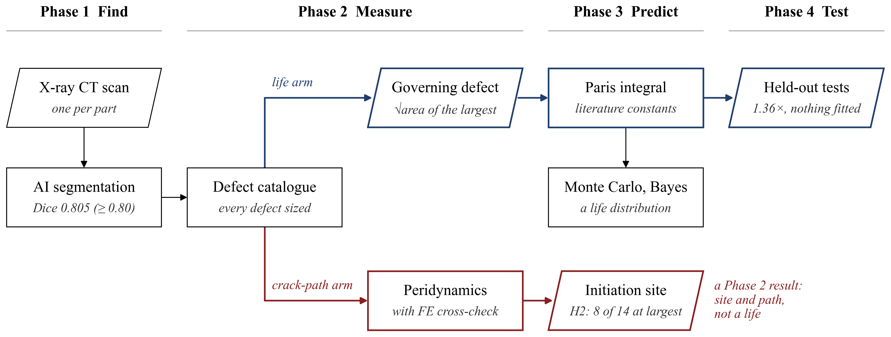
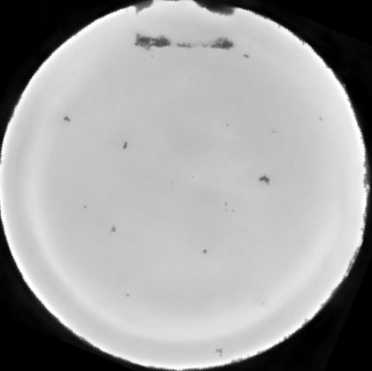
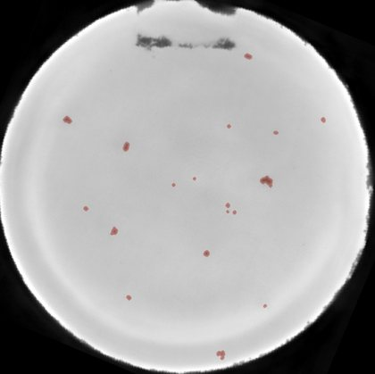

Mathematical Modelling of Fatigue Life of Laser Powder Bed Fusion Components
Predicting how long one 3D-printed metal part will last from the defects in its own CT scan, and testing that prediction against real fatigue tests.
Metal parts made by laser powder bed fusion contain small internal defects. Fatigue cracks start at them, so parts printed the same way can last very different numbers of load cycles, and today a single safety factor covers the whole batch, set by the worst part ever tested. The pages that follow take one part's own defects to its own life, phase by phase, with each step's equation, numerical method and check against a known answer stated before its result.
The problem in the measured data
All 60 fatigue-tested cylinders of the Oak Ridge dataset (open triangles: run-outs, stopped unbroken at 10 million cycles). At 450 MPa, 30 nominally identical cylinders failed between 15,160 and 316,498 cycles: a 21-fold spread.
The method

One defect map feeds two arms. The life arm (navy) takes the size of the largest defect into a crack-growth integral and gives the fatigue life with its uncertainty. The crack-path arm (red) is a peridynamic model of the measured section; it shows where the crack starts and which way it runs, and is not used as a life. Every step is checked against a known answer before it touches measured data.
One cylinder, from scan to life: P017


- Scan. P017 is one of the 14 cylinders held out from all training.
- Defects. The network finds 158 defects in the gauge; the largest measures √area = 1,017 µm (reference labels: 1,017 µm).
- Load. Tested at 450 MPa and R = 0.1, so Δσ = 405 MPa and the driving force at that defect is ΔK = 0.65 × 405 × √(π × 1.017 mm) = 14.9 MPa√m.
- Life. Predicted 18,904 cycles against 18,803 measured (ratio 1.01), with nothing fitted to any measured life.
- Crack start. The first bond breaks at a 268 µm surface defect, not at the 947 µm internal one that later carries the crack.
Results against the hypotheses
| Hypothesis | Criterion | Result | Outcome |
|---|---|---|---|
| H1 Segmentation accuracy | mean Dice ≥ 0.80 | 0.805 | met |
| H2 Crack initiation site | ≥ 90% start at the largest defect | 8 of 14 (57%) | not met |
| H3 Bayesian convergence | within 20% by inspection 3; ESS ≥ 250 | inspection 1; ESS ≥ 1,205 | met |
| H4 Predictive calibration | ≥ 90% inside; slope 0.90–1.10 | 92.9%; 0.902 | met |
The life prediction is within 1.36× of the measured lives of the 14 held-out cylinders with nothing fitted to them. The best statistical fit needs 4 parameters for 1.43×, and a physics-informed neural network 113 parameters for 1.55×.
Propagated through the same model, the scatter in defect size and growth rate reproduces the measured lives of the 46 cylinders not used to build it (Kolmogorov–Smirnov p = 0.69 at 300 MPa and 0.33 at 450 MPa).
Every number on these pages is read from the project's result files when the site is built. Negative results are reported as they came out.